Neste tutorial iremos desenvolver um aplicativo usando React Native. Este aplicativo terá como principal funcionalidade a autenticação de usuários através do Login do Google, utilizando o Firebase como nosso backend.
React Native é uma framework que nos permite desenvolver aplicativos nativos para Android e iOS usando JavaScript e React. É uma ótima escolha para desenvolvedores que desejam criar aplicativos móveis de alta qualidade com agilidade e eficiência.
Neste tutorial, vamos focar na criação de um sistema de autenticação de usuário. A autenticação é um aspecto crucial de muitos aplicativos modernos, e o Login do Google é uma das maneiras mais populares de realizar essa tarefa.
Para tornar as coisas ainda melhores, vamos integrar nosso aplicativo React Native com o Firebase. O Firebase é uma plataforma de desenvolvimento de aplicativos da Google que fornece uma variedade de serviços, incluindo um sistema de autenticação robusto. Ao usar o Firebase, podemos facilmente configurar e gerenciar a autenticação do usuário em nosso aplicativo.
O Firebase vai funcionar como back-end da aplicação. Vamos começar criando um projeto através do console do Firebase.
Clique no botão Criar um novo projeto do Firebase.
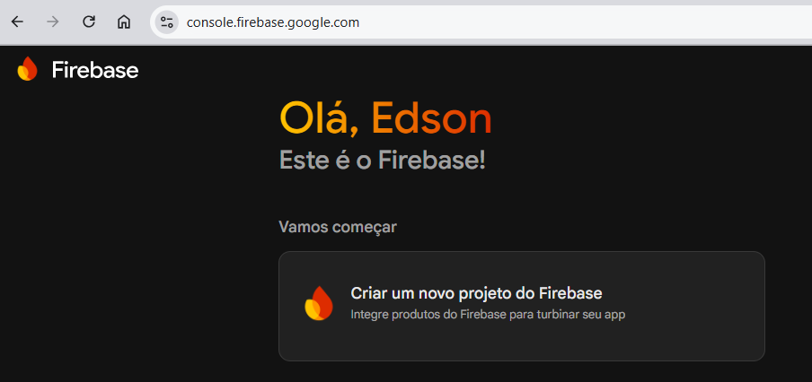
Insira um nome de projeto e pressione Continuar.
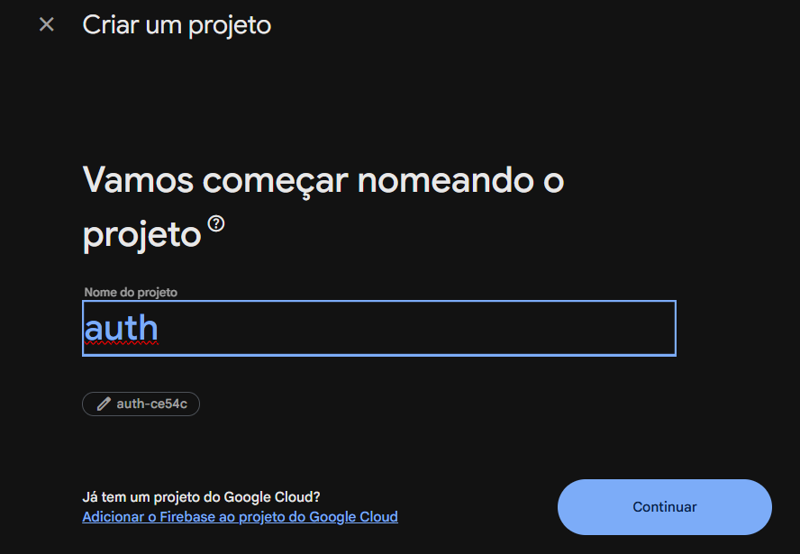
Na próxima tela, deixe ativado o Gemini no Firebase e clique em Continuar. Após você será perguntado se deseja habilitar o Google Analytics para seu projeto. Não habilite e clique em Criar projeto. Você terá que esperar alguns momentos enquanto seu projeto é preparado.
Quando terminar, pressione Continuar para prosseguir para o painel do projeto. Agora, vamos configurar a autenticação.
Na barra de navegação lateral clique em Segurança e Autenticação:
e será apresentada a seguinte tela e você deverá clicar em Vamos começar. Isso habilitará o módulo de autenticação:
Vamos utilizar a autenticação do Google. Clique em Google:
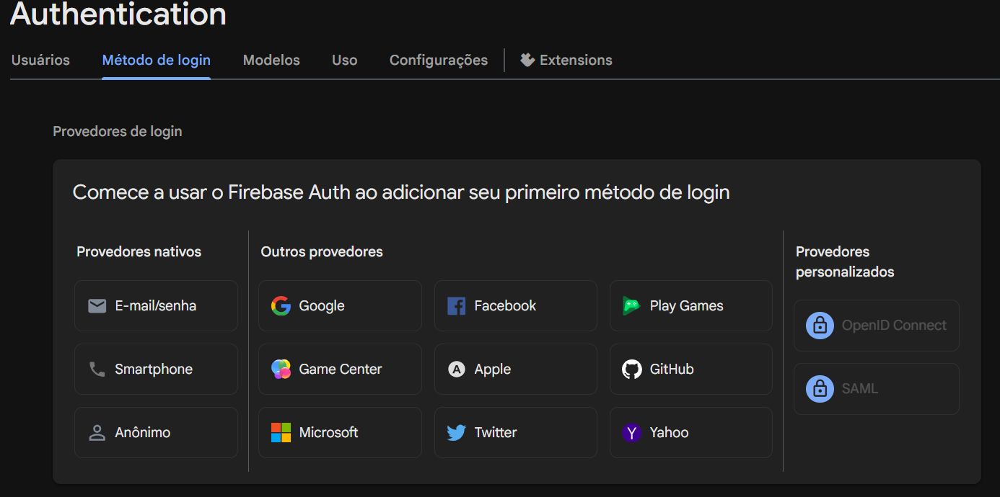
Depois, na tela abaixo ative o provedor de login Google e informe o nome do projeto e e-mail:
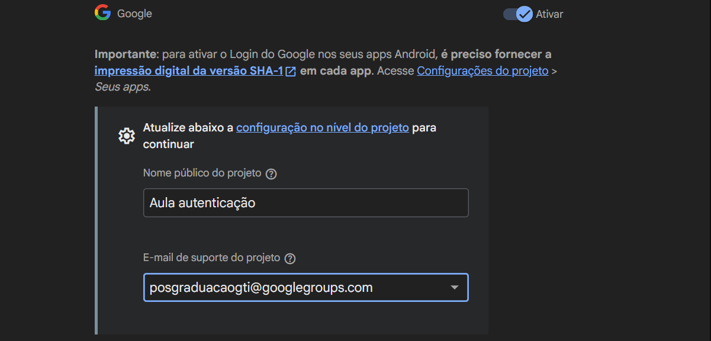
Salve para finalizar a configuração da autenticação do Google em seu projeto do Firebase.
Neste ponto vamos configurar o firebase para responder a um aplicativo Android. Clique no ícone de engrenagem (⚙️ Configurações / Geral) na barra lateral e vá para as configurações do projeto.
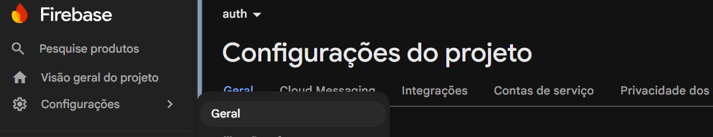
Role a tela até aparecer o seguinte:
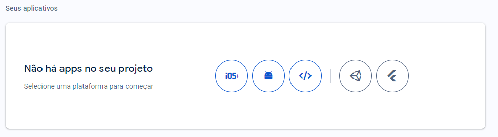
Clique no segundo ícone, que representa uma aplicação Android. Forneça um nome de pacote para o aplicativo e clique em Registrar app.
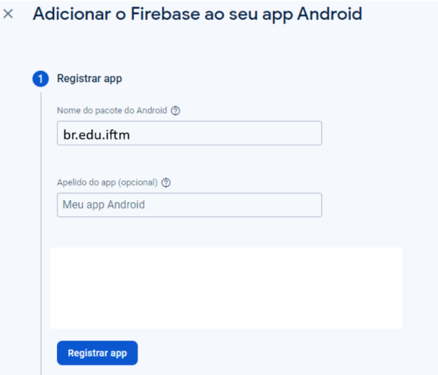
Após você deverá fazer o download do arquivo de configuração, clique em
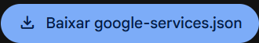
Após clique Avançar e depois em Continuar no console, ignorando todas as próximas etapas.
Vamos criar uma aplicação React native. Primeiro abra um terminal e use os seguintes comandos:
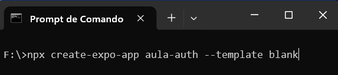
Quando terminar a criação do projeto, vamos abri-lo com o IDE VSCode:
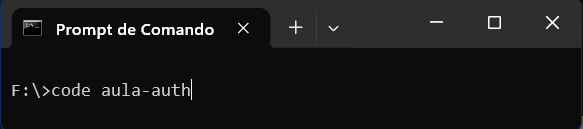
A biblioteca React Native Google Signin fornece um wrapper em torno da biblioteca oficial de login do Google, permitindo que você crie uma credencial e faça login no Firebase.
npx expo install @react-native-google-signin/google-signingoogle-services.json que obtivemos no passo 4 deve ser copiado para a raiz de seu projeto.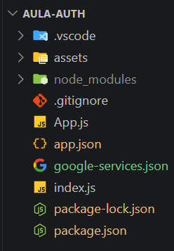
/app.json e substitua o conteúdo por este{
"expo": {
"name": "aula-auth",
"slug": "aula-auth",
"version": "1.0.0",
"orientation": "portrait",
"icon": "./assets/icon.png",
"userInterfaceStyle": "light",
"newArchEnabled": true,
"splash": {
"image": "./assets/splash-icon.png",
"resizeMode": "contain",
"backgroundColor": "#ffffff"
},
"ios": {
"supportsTablet": true
},
"android": {
"googleServicesFile": "./google-services.json",
"package": "br.edu.iftm",
"adaptiveIcon": {
"foregroundImage": "./assets/adaptive-icon.png",
"backgroundColor": "#ffffff"
},
"edgeToEdgeEnabled": true
},
"web": {
"favicon": "./assets/favicon.png"
},
"plugins": [
"@react-native-google-signin/google-signin"
]
}
}npx expo prebuildenter> cd android > gradlew signingReportO resultado será parecido com o seguinte:
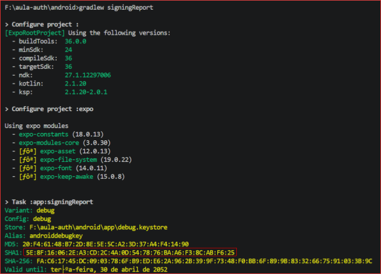
Copie o código destacado que é o certificado SHA-1 de seu app.
Configurações / Geral) na barra lateral e vá para as configurações do projeto. Role a tela até aparecer o seguinte:
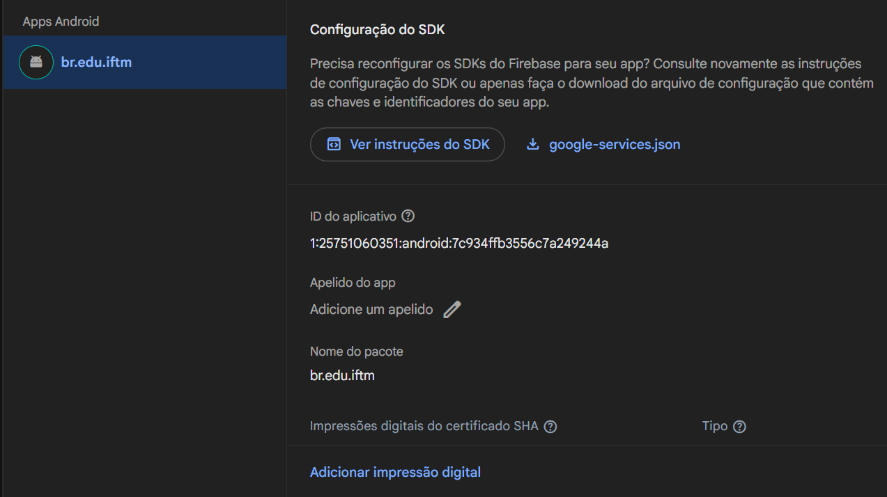
Clique em Adicionar impressão digital e cole o código SHA1 e depois clique em Salvar
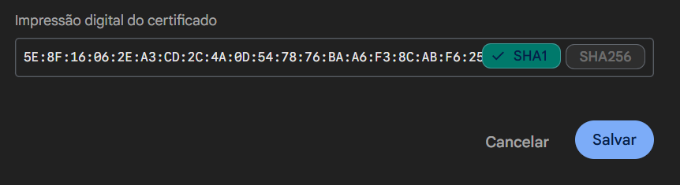
Para executar o App, o comando tem que ser efetuado na pasta raiz do projeto. Verifique o prompt antes de usar o seguinte comando:
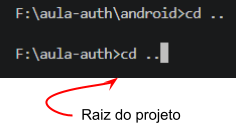
npx expo run:androidPara limpar o cache:
npx expo run:android --no-build-cacheUm fluxo de autenticação em um mobile app é um processo que permite ao usuário acessar recursos protegidos do aplicativo, como dados pessoais, configurações ou funcionalidades restritas.
Para implementar um fluxo de autenticação em um app feito com React Native, é preciso usar bibliotecas específicas que facilitam a integração com serviços de autenticação externos, como Firebase, Auth0 ou AWS Amplify. Essas bibliotecas fornecem componentes e funções que permitem criar telas de login, cadastro, recuperação de senha e verificação de e-mail, além de gerenciar tokens, sessões e permissões de acesso. Alguns exemplos de bibliotecas que podem ser usadas para criar um fluxo de autenticação em um app React Native são: react-native-firebase, react-native-amplify e react-navigation.
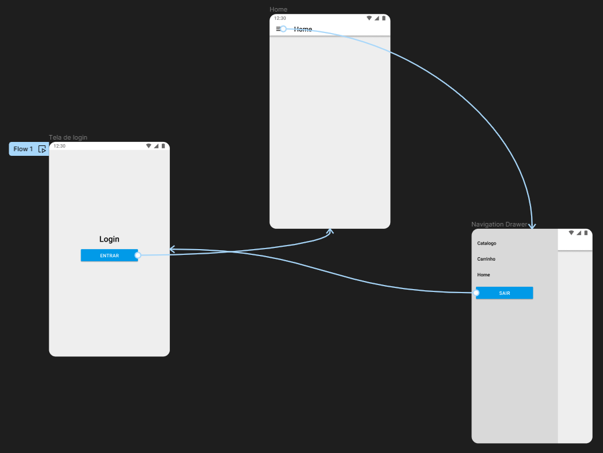
A renderização condicional é a técnica mais indicada para construir uma lógica que protege as telas do app com acesso restrito. Considere o código abaixo:
{isAuthenticated
? (<HomeScreen />)
: (<LoginScreen />)
}Quando a variável `isAuthenticated` é verdadeira, o React Navigation exibe apenas a tela HomeScreen. Quando é falsa, exibe a tela LoginScreen. Isso impede a navegação para a tela protegidas quando o usuário não está logado, e para a tela de login quando está logado. Esse padrão é conhecido como Rotas protegidas.
As telas que requerem login estão "protegidas" e não podem ser acessadas se o usuário não estiver logado. Quando o valor de `isAuthenticated` muda, o comportamento do React Navigation também muda.
Quando usamos este padrão podemos implementar o fluxo de autenticação de forma simples, sem lógica adicional para garantir que a tela correta seja exibida.
O trabalho de configuração e instalação de bibliotecas foi feito nos passos 6, 7 e 8 deste codelab. Desta foram podemos nos concentrar agora no código necessário para implem entar a autenticação de usuário utilizando uma conta Google.
Foram adicionadas as funções onLogin e onLogout e também adicionamos um código para configurar o objeto GoogleSignin.
Para obter o valor do atributo webClientId do objeto GoogleSigin, você deve consultar o arquivo google-services.json (conforme mencionado no passo 8). Neste arquivo, você encontrará o valor desejado navegando pela estrutura de chaves da seguinte maneira: "client" -> "oauth_client" -> "client_id". Certifique-se de que o "client_type" associado a este "client_id" seja 3.
import {
StyleSheet,
Text,
View,
Button,
ActivityIndicator,
Image,
} from 'react-native';
import { useState } from 'react';
import { GoogleSignin } from '@react-native-google-signin/google-signin';
//funções de autenticação
export const onLogin = async () => {
const user = await GoogleSignin.signIn();
return user;
};
export const onLogout = async () => {
await GoogleSignin.signOut();
};
// valor obtido no arquivo google-services.json
GoogleSignin.configure({
webClientId: "usar o valor obtido do arquivo google-services.json",
});
// Telas
const LoginScreen = ({ login, setUser }) => {
const [isSigninInProgress, setIsSigninInProgress] = useState(false);
return (
<View style={styles.layout}>
{isSigninInProgress && <ActivityIndicator />}
<Text style={styles.title}>Login</Text>
<Button
title="entrar"
onPress={() => {
setIsSigninInProgress(true);
onLogin().then(dadosAuth => {
console.log(dadosAuth);
setUser(dadosAuth.data.user);
login(true);
});
}}
/>
</View>
);
};
const HomeScreen = ({ login, user }) => (
<View style={styles.layout}>
<Text style={styles.title}>Home</Text>
<Text style={styles.text}>Bem vindo {user.name}</Text>
<Image
source={{ uri: user.photo }}
style={{ width: 100, height: 100, borderRadius: 50, marginBottom: 16 }}
/>
<Button title="Sair" onPress={() => onLogout().then(() => login(false))} />
</View>
);
const App = () => {
const [isAuthenticated, setIsAuthenticated] = useState(false);
const [user, setUser] = useState(null);
return (
<View style={styles.container}>
{isAuthenticated ? (
<HomeScreen login={setIsAuthenticated} user={user} />
) : (
<LoginScreen login={setIsAuthenticated} setUser={setUser} />
)}
</View>
);
};
export default App;
const styles = StyleSheet.create({
container: {
flex: 1,
},
layout: {
flex: 1,
justifyContent: 'center',
alignItems: 'center',
},
title: {
fontSize: 32,
marginBottom: 16,
},
text: {
fontSize: 14,
marginBottom: 16,
},
});A função onLogin faz o seguinte:
GoogleSignin.signIn(), que inicia o processo de login do Google. Esta função retorna um objeto promise que resolve para um objeto `user` quando o login é bem-sucedido.await é usada para pausar a execução da função `onLogin` até que a promessa seja resolvida. Isso significa que a função onLogin retorna o objeto user somente depois que o login do Google é concluído.Portanto, você pode usar esta função onLogin para iniciar o processo de login do Google e obter informações sobre o usuário que fez login. Por ser uma função assíncrona, você deve usar a palavra-chave `await` ao chamar `onLogin` ou usar a função dentro de uma cadeia de promessas com `.then()` e `.catch()`.
Quando o usuário clica no botão é acionada a função em onPress que faz o seguinte:
Vamos trocar o nome da variável de estado que estávamos usando para controlar se o usuário estava logado, que antes chamávamos de isAuthenticated, para user.
Quando o usuário realizar o login, devemos agora armazenar o objeto retornado, e assim o novo código do componente LoginScreen fica assim:
const LoginScreen = ({ login }) => {
const [isSigninInProgress, setIsSigninInProgress] = useState(false);
return (
<View style={styles.layout}>
{isSigninInProgress && <ActivityIndicator />}
<Text style={styles.title}>Login</Text>
<Button
title="entrar"
onPress={() => {
setIsSigninInProgress(true);
onLogin().then((user) => {
console.log(user);
login(user);
});
}}
/>
</View>
);
};Considerando que este componente será chamada assim:
<LoginScreen login={setUser} />Vamos analisar o que cada parte deste código faz:
- const LoginScreen = ({ login }) => {...}: Esta é a declaração do componente LoginScreen. Ele recebe login como uma propriedade.
- const [isSigninInProgress, setIsSigninInProgress] = useState(false): Isso é um hook de estado do React. Ele declara uma variável de estado `isSigninInProgress` e uma função para atualizá-la `setIsSigninInProgress`. O estado inicial é `false`, indicando que o processo de login não está em andamento.
- {isSigninInProgress && : Renderiza um componente ActivityIndicator se isSigninInProgress for `true`. Isso pode ser usado para mostrar um indicador de carregamento enquanto o login está em andamento.
- Button : Este é um botão que, quando pressionado, inicia o processo de login. Ele primeiro define `isSigninInProgress` para `true`, depois chama a função `onLogin()`. Quando `onLogin()` é resolvido, ele registra o usuário no console e chama a função `login` com o usuário como argumento.
Quando a função login é chamada dentro de LoginScreen (por exemplo, após um usuário fazer login com sucesso), ela na verdade está chamando a função setUser com o objeto do usuário como argumento. Isso atualiza o estado da variável user do componente App para refletir que um usuário fez login com sucesso.
Para demonstrar o uso dos dados do usuário logado, o componente <HomeScreen> foi modificado para:
const HomeScreen = ({ user, login }) => (
<View style={styles.layout}>
<Text style={styles.title}>Home</Text>
<Image
style={{ width: 300, height: 300 }}
source={{
uri: user.user.photo,
}}
/>
<Button title="Sair" onPress={() => onLogout().then(() => login(false))} />
</View>
);E o código completo fica assim:
import { StyleSheet, Text, View, Button, ActivityIndicator, Image } from "react-native";
import { useState } from "react";
import { GoogleSignin } from "@react-native-google-signin/google-signin";
//funções de autenticação
export const onLogin = async () => {
const user = await GoogleSignin.signIn();
return user;
};
export const onLogout = async () => {
return await GoogleSignin.signOut();
};
GoogleSignin.configure({
webClientId: "676797397237-pjipptjgb1nuaomvcm6rd6dpt19jl06n.apps.googleusercontent.com",
});
// Telas
const LoginScreen = ({ login }) => {
const [isSigninInProgress, setIsSigninInProgress] = useState(false);
return (
<View style={styles.layout}>
{isSigninInProgress && <ActivityIndicator />}
<Text style={styles.title}>Login</Text>
<Button
title="entrar"
onPress={() => {
setIsSigninInProgress(true);
onLogin().then((user) => {
console.log(user);
login(user);
});
}}
/>
</View>
);
};
const HomeScreen = ({ user, login }) => (
<View style={styles.layout}>
<Text style={styles.title}>Home</Text>
<Image
style={{ width: 300, height: 300 }}
source={{
uri: user.user.photo,
}}
/>
<Button title="Sair" onPress={() => onLogout().then(() => login(false))} />
</View>
);
const App = () => {
const [user, setUser] = useState(false);
return <View style={styles.container}>{user ? <HomeScreen user={user} login={setUser} /> : <LoginScreen login={setUser} />}</View>;
};
export default App;
const styles = StyleSheet.create({
container: {
flex: 1,
},
layout: {
flex: 1,
justifyContent: "center",
alignItems: "center",
},
title: {
fontSize: 32,
marginBottom: 16,
},
});